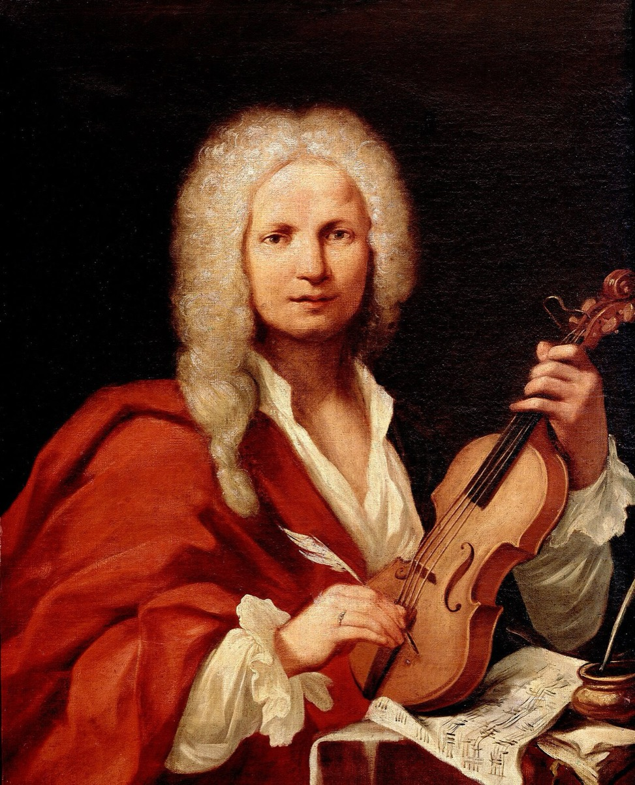

The Italian conversion: Vivaldi arrives in a crate from Amsterdam

The most consequential delivery in the history of German music arrived, around July 1713, in a student's luggage. The teenage Prince Johann Ernst — the musically gifted half-brother of Weimar's junior duke — came home from his studies in Utrecht with a haul of the newest music prints, and the provenance mattered: Amsterdam was Europe's music-printing capital, and its freshest sensation was Vivaldi's L'estro armonico of 1711, the concerto collection then electrifying the continent. At the Rote Schloss, where Bach taught the prince and played for the junior court, the prints landed on his desk — likely with a commission attached. Amsterdam's famous blind organist reportedly played concertos solo at the keyboard, the whole orchestra condensed under two hands; the prince, it seems, had heard the trick abroad and wanted the same at home. If so, it may be the most productive piece of teenage enthusiasm on record.
Bach set to work the way he absorbed everything — through his hands. He transcribed roughly twenty concertos: Vivaldi above all, plus Marcello, Telemann, and the young prince's own compositions, dutifully honored alongside the famous names. Five went to the organ (BWV 592–596), the rest to the harpsichord (BWV 972–987). On the surface this was arrangement work, a craftsman's service for a patron. Underneath, it was the most intensive analysis seminar of his life, because transcription is study of a uniquely merciless kind: to recast an orchestral score for ten fingers, you must decide what every bar is for — which notes are structure and which are upholstery, where the engine of a movement actually sits. Copying admires a piece; transcribing dismantles it. Bach dismantled twenty.
What happened next is reported, for once, in something close to Bach's own voice. Forkel, writing from the memory of the sons, states it as plainly as we could wish: it was Vivaldi's concertos that taught him "how to think musically" — order, coherence, proportion; how a movement's ideas could drive somewhere rather than merely unfold. The phrase deserves its fame. Bach at twenty-eight already commanded more counterpoint than anyone alive; what he lacked, and knew he lacked, was Italian architecture. The transcriptions installed it permanently: the ritornello principle, a recurring refrain as structural anchor, which became the form-engine of the Brandenburgs and of most cantata movements thereafter; goal-directed harmony at the Italian voltage, momentum you can feel leaning toward its destination; and the built-in drama of solo against group. Fused with the German counterpoint he already possessed and the French style he had absorbed at Celle as a schoolboy, the synthesis was complete. From about 1714 onward, "Bach's style" simply is this three-nation alloy — ask what changed between the early toccatas and the mature works, and the shortest answer is Vivaldi, metabolized.
The boy who caused all this did not live to see what it became. Prince Johann Ernst died in 1715, at eighteen, after long illness — the timeline's most poignant minor figure, a genuinely talented composer whose surviving concertos Bach thought worth arranging, and whose shopping trip rewired Western music. Every large history turns somewhere on a small courier; this one was a dying teenager with good taste and a full trunk.
For the education track, this card is the keystone, and the reason the era essay calls it the hinge of the whole decade. Bach never met Vivaldi. He never crossed the Alps, never heard an Italian orchestra in an Italian room. He learned Italy through his hands — copying and arranging at a desk in Thuringia until the machinery was his — and the transcriptions are the most definitive proof we have of the method that built him, the discipline of absorbing music by rewriting it, applied here at the exact moment the right material arrived. It is study advice hiding in a biography card. You do not need the master in the room. You need the scores, the desk, and the willingness to take the thing apart until it has no secrets left.
Continue with the era essay: Weimar: the organ decade and the Italian conversion, or hear the new engine put to work: the Konzertmeister promotion and the monthly cantatas.
Bach's concerto transcriptions BWV 592–596, 972–987 (Bach Digital)
Wolff, The Learned Musician, ch. 6
Forkel, ch. on Bach's development
→ full bibliography & links